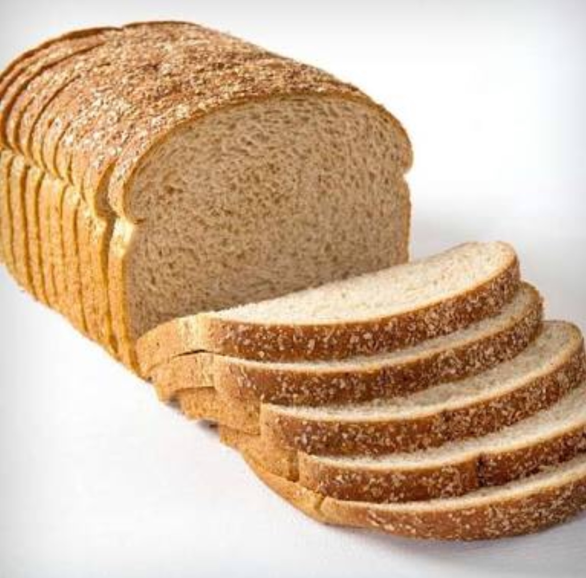
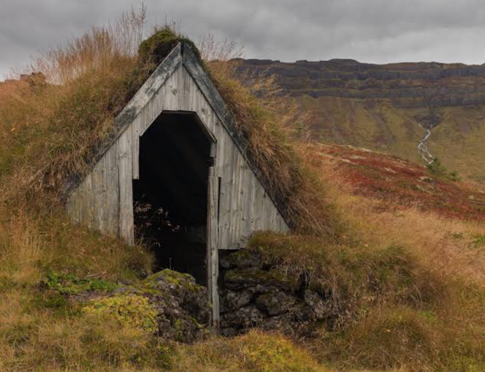
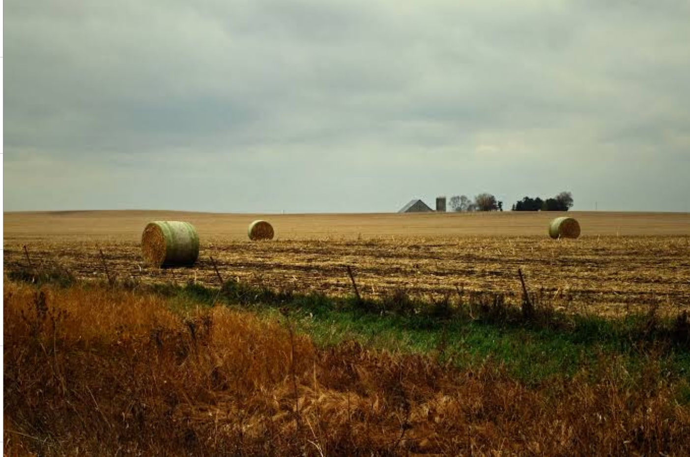
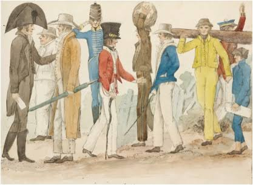
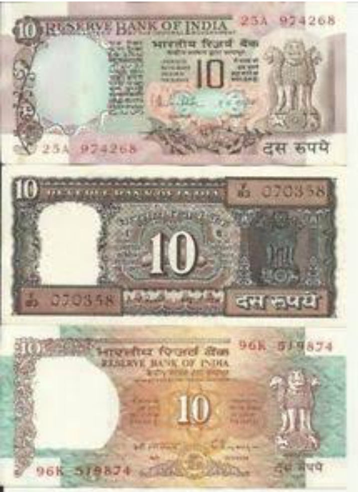
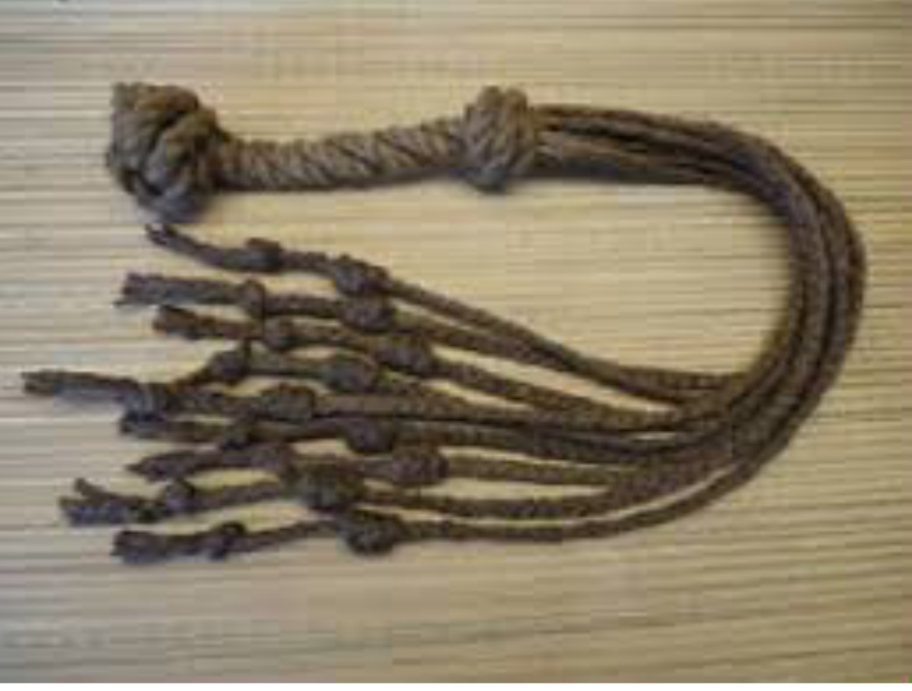

Rations of food per day enough for a small breakfast and an average dinner because the food is in low supply. The captains get meat and fried vegetables and wine for dinner however the convicts get lettuce and water and possibly beef. For breakfast settlers shall have toast and pig meat. The convicts shall get buttered bread and water.
If you work for somebody they will provide you shelter until you earn enough money for a shelter for yourself because we need to build some.
The farm will be untouched for the convicts but the farmers can touch it but not eat. We shall farm for a month then eat the food that we had farmed the last month. We did this because the food can not be trusted with the convicts.
You should get as much money as you deserve and how hard you work. We shall make the convicts work at least 12 hours a day because they need to work there sentence off.
Reward is food, enough for a bit of lunch for good behaviour. The punishments are varied amounts of time in prison for the different crimes. Thou shall be hanged if caught if caught stealing executive food or drink. This is because we cannot have vermin people stealing food from us.The reward is to encourage convicts do work hard and be good.
This rule applies to the convict. The convict has different punishments to the citizens include working and the cat of nine tails. This is so the convicts will not stuff about or muck around again we need good food and houses and the convicts are working towards that.
There shall be shelter set up over night for everyone to sleep in until most of the shelter have been built, this is because the convicts need good rest to make GSB (Great Southern Britain) a brilliant colony and rise above the rest